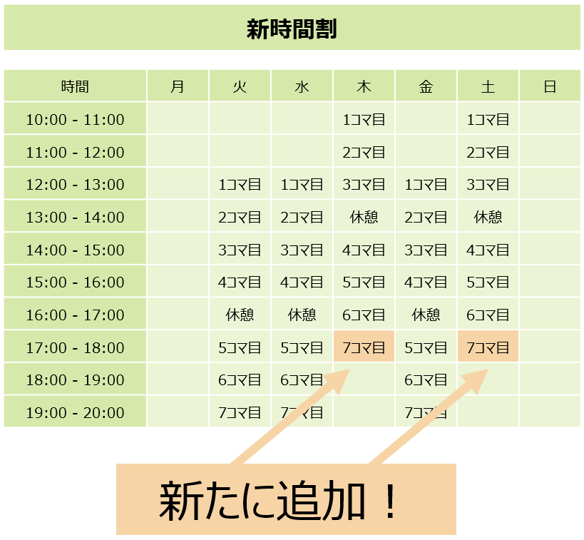

生徒様専用ページです！
メニュー一覧
授業予約ページ

空き状況の確認と
授業の予約を行えます。
お知らせ

各月のお知らせ
コロナ関連のお知らせ
学びかた

コロナ終息までの
学び方について
コロナ対策

教室で行っている
コロナ対策のご紹介
メッセージ

店長矢野から皆さまへ
LINE公式

教室からのお知らせを受け取れる
LINE公式アカウントはじめました！
教室からのお知らせ
６月3日現在、教室は営業しております！（6月最新版）
キュリオステーション菊川店の生徒の皆様へ
6月より新たなシステムを導入して教室を運営していきたいと思います。 衛生には引き続き気を付けて教室運営を行ってまいりたいと思います。下記『当面の学び方につきまして』と『教室のコロナ対策とそれに伴う皆様へのご協力のお願い』に教室での学び方をご説明させていただいておりますので、ご確認いただき皆様お互いに気持ちよく教室をご利用いただけますようご協力よろしくお願い申し上げます。 矢野自身がコロナ感染や濃厚接触者指定を受ける状態になった場合にもスムーズにみなさんにご連絡が出来るように、教室のLINE公式アカウントを登録していただけますよう宜しくお願い致します。ご登録がお済の際には、登録完了の旨をメッセージで送っていただけますと助かります。（登録をしていただいただけでは、こちらにはどなたがご登録されたのかはわかないようになっているため） キュリオステーション菊川店 矢野 学び方その①完全予約制の1コマ60分：教室４名での授業とし当日のご予約状況を考慮したうえで３０分の延長を行う。下記の諸々のルールありです！ 学び方その②ZOOMなどのリモート操作をどのコースの方にもご説明いたします。 今後実店舗で運営ができなくなる場合も想定しまして、皆様にも教室にお越しいただかなくても、質疑ができるようになっていただけるとよいのではと今まで以上に考えるようになりました。リモートによる質疑の場合は、こちらで皆さんのパソコンの画面を拝見させていただく画面共有を行うことで、より詳細なアドバイス差し上げることが可能となります。ご興味がある方は、矢野に電話やメールをください。また、遠方の方やご持病などでなかなかお外にでるのが難しい方などには矢野からお声をかける場合もあるかと思います！ 学び方その③自習スペースを設けました。その名も「Lifedesignスペース」です！
ご予約は、引き続き電話とホームページからできるようになっております。予約システムは皆さんの利便性を高めるためにあくまでもご用意したものですので、今まで通りの電話でご予約をご希望の方は、いままでどおりのご予約方法をご利用くださいませ。 また、すでに予約システムをご利用いただいてのご予約をされていらっしゃる皆様におかれましては、ご面倒なようでしたら、教室のオフィシャルLINEに一度ご登録いただき、予約状況はシステムで確認した後、ＬＩＮＥから授業希望日をメールしていただきますと、ご予約が簡単にできるかと思います。 なお、LINEでの空き確認は、授業中や営業時間外の時間にお返事が難しいためお控え頂きたく存じます。空きを確認してから予約をしたい場合は、お手数ですが、お電話で空き確認とご予約を併せて行っていただきますようご協力お願いいたします。 ◎教室への入店・退店方法 ①教室には、必ずマスク着用にてお越しくださいますようお願いいたします。なお、当日普段とは異なるようすでお咳を頻繁にされている方におかれましては、授業をお断りする場合もございますので、予めご了承ください。また、ご予約の方はなるべく検温をされてから教室へお越しくださいますようご協力お願い致します。 ②入り口は自動ドアと自転車置き場側の両方のドアを利用できます。（ドアノブも直接触れずに開けられる装置を導入しました）お帰りの際には、席が空いているドア側からご退出をお願い致します。入店時間は、退店される生徒さんとのバッティングを避けるため、ご予約時間ジャストでの入店をよろしくお願い致します。 ③レインコートは、両入り口のハンガーラックにおかけください。その後、矢野よりお座りいただく座席をご案内しますので、お待ちくださいますようお願いします。 ④入り口付近に設置してあるアルコール消毒液で、手指の消毒をお願いいたします。自転車置き場側出口に同じものを設置いたしましたのでお手洗いからお戻りの際などにもご利用ください。 ⑤授業に必要なテキストや課題は矢野がご用意いたしますので、お待ちください。また、授業の1コマの50分を過ぎたころには、終了のお声をおかけしますので、次回のご予約をお教えいただき、授業を終了していただきます。授業時間は、６０分ではございますが、現在机やテキストの清掃を行っているため５分前の退店にご協力いただけますようよろしくお願いいたします。 ⑥ご退出前にも消毒液で手指の消毒を行っていただき、自動ドアか自転車置き場側の出口の込み合っていない出口よりご退店ください。 ◎教室設備のコロナ対策といたしまして（新たなものを含めて） 対策その①隣り合う座席はOPPフィルムで仕切ってあります。 お越しになった4名の方との距離、矢野との距離が十分にとれるようレイアウトを再度変更いたしました。互いの飛沫を気にせず、学ぶことができるかと思います。 対策その②フェイスガードとマスクと手袋を装着してのインストラクションを行います。 矢野がインストラクションを行う際にフェイスガードとマスクを装着してインストラクションを行います。 対策その③キーボード・マウスの消毒の徹底 キーボードとマウスの消毒は、授業が終了するごとに行います。アルコールを用いて消毒を行います。キーボードにはシャンプーハットタイプのカバーを付けており、消毒後より衛生的に汚れをふき取ることが可能となりました。 対策その④換気と加湿の徹底 今まで以上に換気を徹底するため、教室の窓２つを常に開けた状態で授業を行っております。エアコン、ヒーターを用いているため、夏の冷気、冬の暖気は十分にあり快適に過ごせるように準備しております。また、乾燥を防ぐため空気清浄機の加湿器も利かせております。 対策その⑤ゴミ箱を撤廃いたしました。 皆様にはご不便をおかけいたしますが、ご自身でお出しになったごみはすべてお持ち帰りいただくようご協力お願い致します。（ティッシュペーパー・ペーパータオル・使用後の鼻紙をいれるビニール袋はご用意しております。）また、ペットボトルの持込は可能ですので、のどが渇く方はご用意ください。 コロナウィルスに感染した場合は、教室は臨時休校とさせていただきます。その際、体の状態によっては急な状態で臨時休校となることも予想されます。その場合、まずは教室のオフィシャルLINEメッセージより、コロナウィルスに感染した旨をお伝えいたします。また、家族に教室入り口に教室閉店のお知らせの掲示をお願いしますので、オフィシャルLINEをご利用されていない生徒様は店舗への掲示にて感染の旨をお知りになることと思われます。いずれにしても、突然のお休みとなりご不便を強いることが予想されます。教室再開の目安ですが、療養終了基準は、発症日から10日間経過し、かつ症状軽快後72時間経過していることとされています。（例）発症日 4月1日 → 療養終了日 4月11日
また、療養期間通して無症状であった場合は検体採取日から7日間で療養期間が終了ということですので体調を見ながら皆様へは教室再開日をお知らせするかたちになるかと思います。 濃厚接触者の指定を受けた場合も、感染をした場合と同様に臨時休校とさせて頂きます。現在、矢野は、自分のスマートフォンに厚生労働省が作成した感染通知アプリ「COCOA」を入れてあります。こちらからのお知らせや、自分の周りの人がコロナ感染をしてしまったなどにより濃厚接触者の指定を受けてしまった場合、新型コロナウィルス感染症患者と接触があった日の翌日から７日間は、外出を自粛し、健康観察を行うこととなります。この7日間が臨時休校期間となります。この期間が過ぎた翌日からは、通常の教室運営を行います。濃厚接触者は、感染者ではないため、体調等に問題がない場合は、自粛期間中に自宅から濃厚接触者として指定を受けた旨を、教室のオフィシャルLINEやホームページの更新や教室自動ドアへの掲示と留守番電話へのメッセージなどによりお知らせできると想定しております。その後状態が悪化し、実際に感染をしていた場合は、コロナウィルスに感染した場合の対応をとらせていただきます。 1時間ずつの時間の中でどのように皆さんの授業の質を上げていくことができるか、学び易い環境をおつくりすることができるかが、今後の課題です。また、秋から冬にかけて乾燥する時期が続き、感染者数が増も予想され継続的に感染の波は訪れるものと想定しております。今後も国や都の要請などを考慮しつつ利便性は高め、安心して通える教室を目指していきたいと思います。 今月より4,400円の月謝とさせていただき、教室での管理衛生費は廃止とさせていただきました。それに伴いまして新たに①木・土の営業時間の延長②30分の延長③自習室を新たに新設いたしました。今まで以上に教室を便利に使っていただけるとよいなと思っております。また、平日の前半部門が比較的すいていること、そして土曜日が比較的込み合うなど教室としての利用傾向もアンケート結果のご報告の際にもご連絡させていただきましたが、ぜひ教室の傾向を知っていただき、皆さんお一人お一人が便利に心地よく教室をご利用いただけましたら幸いです！ それでは、今月もよろしくお願い致します！
突然の場合でもご連絡ができますよう、ぜひスマートフォンをお持ちで、LINEをやってらっしゃる方がおりましたら、当教室のオフィシャルLINEの登録をよろしくお願い致します！教室公式アカウントのQRコードの画像を下記ご用意いたしましたので、ご利用ください。また、登録の仕方がわからないよと言う方は、ご連絡いただければ、メールにてお応えいたします！パソコンからご覧の方は右QRコードをスマートフォンで読み取っていただくと登録が簡単です！ 下記に教室公式アカウントのQRコードの画像と『友達追加ボタン』を配置しましたので、ご利用ください。また、登録の仕方がわからないよと言う方は、ご連絡いただければ、お応えいたします！ ↑パソコンからご覧の方は上記QRコードでの登録が便利です！ ↑スマホでご覧の方は、こちらの友達追加ボタンをタッチすると、LINEに登録ができます！ 当面の学び方につきまして
教室のコロナ対策とそれに伴う皆様へのご協力のお願い

矢野がコロナウィルスに感染した又は、濃厚接触者の指定を受けた場合の対応
矢野より皆さんへ

当教室のオフィシャルLINEの登録をよろしくお願い致します！